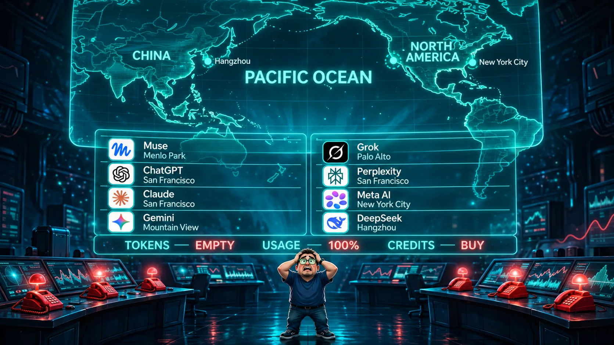

Report · As of November 22, 2026
Every Prompt Pays Again
The token cost of connectors, plugins, websites and agents.
Key findings
The 2-minute versionEvery prompt re-reads the whole bundle, not just your new message. §1
Once loaded, tool definitions ride along on later turns, used or not. §4
Pasted text and fetched pages stay until compacted, summarized or removed. §6–7
An agent pays a growing bundle at every step. Step count drives the total. §8–9
Context, usage and billing are three different numbers. Caching cuts price, never room. §3
Just the playbook →
12 things to do, in order of payoff (§14)
About 9 minHow it works →
Tokens, the bundle and the three numbers (§1–3)
About 55 minFull report →
All 15 sections, with sources and grades

Who contributed to this report
This report was researched and written by Muse, then reviewed in the open. Seven other AI systems checked the draft; every verified correction was applied, and the rest were answered in the open.
| Contributor | Contribution |
|---|---|
| Muse (Meta) | Research, drafting, claim audits, and the page build |
| ChatGPT (OpenAI) | Review round, and the proofreading passes |
| Claude (Anthropic) | Review round, and the design mockup |
| Gemini (Google) | Review round, and research notes used as leads |
| Grok Bot (xAI) | Two review rounds, and layout suggestions |
| Perplexity | Two review rounds |
| Meta AI | Review round |
| DeepSeek | Final review round |
The short version
Every time you send a prompt, the AI does not just read your new message. It reads a bundle: its own instructions, your standing instructions, the conversation so far, the definitions of the tools it can use, and anything it has fetched, been handed, or remembered along the way. Then it answers — and on your next prompt, it reads the bundle again, now including its last answer. That is the typical full-history pattern; which parts of the bundle are loaded, cached, or trimmed varies by platform, and sections 1 and 11 qualify it. But it is the default shape of a chat.
That one mechanism explains almost everything in this report. Connectors cost room because their definitions ride in the bundle. A pasted document costs room on every later turn, not just the turn you pasted it. A web page an AI fetches to answer you once stays in the conversation — retained until it is compacted, summarized, or removed — and is re-read after that. An agent that takes twenty steps does not pay the bundle once — it pays a growing version of it twenty times.
Costs in this report are relative — small, medium, dominant — because your numbers will not match anyone else's. They depend on your tool, your plan, your connectors, and how you work. Where a hard number appears, it is a vendor-published anchor, labeled as such, with the product it applies to. It is not a prediction of your bill.
One more distinction, because most confusion about AI costs lives here: context, usage, and billing are three different numbers. A conversation can fill its context window without exhausting a subscription. A cached prompt can cost less money while taking up exactly the same room. Keep those three apart and the rest of this report is straightforward.
The basic unit: a token, a window, and stateless model calls
The model call is stateless: the model does not remember your last message, so the full history is sent again.
A token is a chunk of text — roughly a short word or part of a longer one. Perplexity's own explainer, citing OpenAI, puts it at about 100 tokens for 75 words. Everything an AI reads and writes is measured this way.
The context window is how much the model can hold in view at once: the bundle described above, plus the answer it is writing. Windows vary widely and vendors publish them unevenly. As a vendor-published anchor, Google publishes Gemini Apps windows by plan — 32k tokens with no AI plan, 128k on AI Plus, and 1M on AI Pro and AI Ultra. Anthropic and OpenAI publish windows for their models and API. Microsoft, notably, publishes no context-window figure for Microsoft 365 Copilot at all in the documentation checked for this report. The window your chat gives you is a product decision, not a universal constant.
The fact that matters most: the model call itself is stateless — the model does not remember your last message. Anthropic's API documentation states it plainly — the Messages API is stateless, and "you always send the full conversational history to the API." Perplexity explains the same thing in consumer language: the app saves the conversation, and "with every new message, the app sends the model the whole conversation so far, not just the latest message."
Note the distinction, because products blur it in their marketing: statelessness is a property of the model call, not of the product around it. A chat app can keep saved memory, project instructions, and your past conversations — but any of that reaches the model only by being placed into the bundle for the next call, where it is read, and occupies room, like everything else in it. Product memory does not repeal stateless calls; it is one more thing the calls carry.
There are engineering variations. OpenAI's Responses API can carry state server-side, so a developer sends only the new message and the server rebuilds the conversation. Anthropic has a beta feature, message threads, that does something similar: after the first request, you send only the new messages and reference the previous response ID, and the thread expires five minutes after its last request. The API deletes the thread no more than an hour after its last use, and Anthropic states that threads do not change pricing or rate limits. But these change who carries the history, not whether the model sees it. OpenAI states the billing consequence directly: even when using server-side chaining, "all previous input tokens for responses in the chain are billed as input tokens." The re-read is real on both platforms. What varies is who does the carrying and how much of the repeated material is discounted by caching — covered in section 11.
Google, to its credit, says the quiet part in a consumer help page. Its Gemini usage guide rates ongoing conversations as medium cost because they "require Gemini to re-read the previous conversation history to maintain context," adding: "As the chat gets longer, this requires more thinking power." Its advice follows in the same place: start a new chat when you move to a new topic.
Anatomy of one prompt: what is actually in the bundle
In a working conversation, what you just typed is rarely the expensive part.
From the bottom up, a single request typically contains:
- The system layer. The product's own instructions to the model — who it is, how it should behave, what tools exist. You never see most of this, and you cannot remove it. It is a fixed cost on every turn.
- Tool definitions. Names, descriptions, and parameter schemas for every tool currently loaded — connectors, search, file tools, code tools. This layer is the subject of sections 4 and 5, and it is the layer users most often pay for without knowing it exists.
- Your standing instructions. Custom instructions, project instructions, and any saved memory or personal context selected for the current request. These can persist across turns, but what is included — and how much — depends on the product's memory and context-loading behavior.
- The conversation. Every earlier message and every earlier answer, growing by both each turn. Early in a chat this is the smallest layer. Late in a chat it is usually the largest.
- Retrieved and returned material. File contents, web pages, search results, connector data, and tool results from earlier steps. This is the layer that surprises people, because it arrives as a side effect of asking a question, not as something they typed.
- Your new message. Often — in a long chat or an agent run — the smallest part of the whole request.
What one request carries
Illustrative — sizes vary by platform and turn
Read bottom to top: the bundle is built from the system layer up. Layer heights are not measured token counts. Which layers load, and how much is served from cache, varies by product (§4, §11).
Which of these layers are actually loaded on a given turn, and how much of them is served from cache rather than re-processed at full price, varies by platform and mode — sections 4 and 11 cover the variations. The list above is the typical full-history anatomy, not a guarantee for every product.
Scope: what this study measured
A measurement study of agent traffic (REALM 2026, by Tommy Tran — 954 episodes, 4,891 requests, on one Claude Haiku model, across three synthetic task families, with prompt caching disabled) found the recurring fixed prefix at 76.6% of baseline input tokens, with tool schemas and the tool-use preamble at 69.1%. One numerical coincidence to flag: tool schemas at 69.1% are about 90.2% of that 76.6% fixed prefix — the same figure as Anthropic's unrelated 90.2% evaluation gain in section 9, and not the same measurement. The caching-disabled condition matters in a report that discusses caching throughout: those measurements describe an experimental setup without caching, not the economics of a production application with it. The study's exact split is an illustration from one setup, not a universal anatomy. But its direction matches what the vendors themselves document: in a working conversation, what you just typed is rarely the expensive part.
Three different numbers: context, usage, and billing
Context, usage, and billing are three different numbers.
Context
How much room the bundle takes in the window. When it fills, the chat is full — regardless of what you have paid.
Usage
How much of your plan you have burned — session and weekly limits, separate from context size.
Billing
Money per token on the APIs — input, output, cache writes and reads. A subscriber in a chat app never sees this bill.
| Model | Input | Output |
|---|---|---|
| OpenAI GPT-6.2 Astra | $8 | $40 |
| OpenAI GPT-6 Astra | $10 | $50 |
| Anthropic Claude Opus 5.5 | $4 | $20 |
Output at 5× input on these flagship lists — anchors for the named models, not universal rates.
Context consumption is how much room the bundle takes in the window. When it fills, the chat is full — regardless of what you have paid.
Subscription usage is how much of your plan you have burned. Claude's paid plans, for example, run on a five-hour session limit (with one published exception: verified Ultra accounts have no five-hour limit) plus weekly limits that are separate from context size. Google expresses Gemini plan usage as multipliers over a standard level rather than as tokens at all. A long conversation that triggers automatic summarization can, Anthropic warns, use more of your usage limit — the fix for a context problem can be a usage cost.
Usage limits are also a live commercial fight, not a fixed technical fact. News coverage tracked on Ground News (searched November 22, 2026) led its "ChatGPT usage limits" results with "OpenAI doubles ChatGPT Pro usage limits after backlash over planned 50% cut" (October 29, 2026, 24 sources) — a vendor planned to halve a limit, users pushed back, and the limit doubled instead. The scope of that doubling matters: it applied to ChatGPT Work and Codex allowances on the Pro tiers (and Business Premium), not to all ChatGPT usage; on Pro 200 the planned cut was canceled and the lower allowance raised to match. Your plan's ceiling can move for business reasons overnight, which is one more reason this report treats usage as its own number, separate from context and from price.
API billing is money per token, split into input, output, cache writes, and cache reads, sometimes plus per-call charges for tools like web search. It applies to developers calling an API. A subscriber in a chat app never sees this bill, and an API price is not what a subscriber "pays" per message.
Input and output are not priced alike. Across the current flagship API price lists from both OpenAI and Anthropic, output tokens are priced at five times input — as vendor-published anchors: OpenAI's GPT-6.2 Astra at $8 per million input tokens and $40 per million output tokens, its GPT-6 Astra at $10 and $50, and Anthropic's Claude Opus 5.5 at $4 and $20. These are anchors for the named models, not universal rates. One tier breaks the pattern: GPT-6 Astra prompts with more than 272k input tokens are priced at 2× input and cache rates and 1.5× output for the full request — $20 per million input tokens and $75 per million output — so at long context the output-to-input ratio is 3.75×, not 5×. (That is a pricing ratio; it is a different claim from the derived multi-agent 3.75× figure in section 9, which happens to share the number.) Newly generated output is charged at output rates, and it does not stay spent: everything the model writes joins the conversation and is re-read as input on later turns — where, as retained history, it can qualify for cached-input pricing. A long answer is charged at the highest rate once, then at input rates for the rest of the chat.
Caching sits across all three, and it is widely misunderstood. A cached token still occupies the context window. Caching changes the price and processing of repeated material — it does not create room. A chat can be cheap per turn and still hit its context limit. A chat can be well inside its window and still be expensive in usage. Any tool, post, or person who uses "cost" for all three at once is blurring the thing you most need to see clearly.
Connectors, apps, and extensions: the definitions ride along
To use a connector, the model needs its definitions — and those definitions go into the bundle.
| Vendor | How definitions load | What is published | Grade |
|---|---|---|---|
| Claude | Three modes per conversation: Auto (default, dynamic), Always available (all loaded up front), On demand (discovered when needed) | Guidance by tool count: Auto for 10–30 tools; On demand or Auto at 30+ or multiple connectors; On demand at length limits | Documented |
| Microsoft | Copilot declarative agents: up to five plugins always injected into the prompt; above five, semantic matching on the description; all functions of a matched plugin returned | The injection rule and the quality warning above 10 functions; MCP tools resolved dynamically at runtime | Documented |
| ChatGPT | Connected apps documented by capability; consumer loading modes not published in the material checked | What an app's definitions cost in context: not published | Unknown |
| Gemini | Connected Apps documented by capability; consumer loading modes not published in the material checked | What an app's definitions cost in context: not published | Unknown |
Connectors — called apps in ChatGPT, Connected Apps in Gemini, connectors in Claude and Copilot — let an AI reach your email, calendar, files, chat tools, and other services. To use one, the model needs to know what it can do: the tool's name, a description of when to use it, and the schema for its inputs. Those definitions go into the bundle.
OpenAI states the mechanism without hedging, for its API: function definitions "count against the model's context limit and are billed as input tokens," and its advice is to limit the number loaded up front, shorten descriptions, or defer them. As a vendor-published anchor, OpenAI suggests aiming for fewer than 20 functions available at the start of a turn. Anthropic likewise documents that tool-use pricing counts the tools parameter, and that simply having tools present adds a fixed tool-use instruction block before any specific tool's definition is counted.
How much this costs you in a consumer chat depends on the loading mode, and here the vendors diverge:
- Claude documents three modes, set per conversation. Auto, the default, has Claude dynamically decide which connectors to load. Always available loads all of them at the start. On demand discovers and loads them when needed. Anthropic's guidance, as a vendor-published anchor: the page's table recommends Auto for 10 to 30 tools with mixed usage, On demand or Auto at 30+ tools or multiple connectors, and On demand when conversations are hitting length limits. Anthropic's reason is the one this report makes: "Each connector takes up space in a conversation."
- Microsoft publishes the most concrete rule outside Anthropic. As a vendor-published anchor: when a Copilot declarative agent includes up to five plugins, the agent always injects the plugins into the prompt; with more than five, it switches to semantic matching on the plugin's description. Microsoft also warns that when a plugin matches, all of its functions are returned — and that response quality may degrade, due to token window limits, if more than 10 functions are included. The scope matters: these plugins are supported only as actions within declarative agents — they are not enabled in Microsoft 365 Copilot — and MCP plugin tools are resolved dynamically at runtime by default, so the tool set an agent works with can be discovered as it runs rather than fixed in advance.
- ChatGPT and Gemini document what their apps can do, but neither publishes, in the material checked, what an app's definitions cost in context or which loading modes a consumer can choose. That absence is graded Unknown in the appendix — it does not mean the cost is zero; it means the vendor does not tell you.
Two practical consequences follow. First, disabling a connector in one conversation and disconnecting it from your account are different operations with different effects; know which one you did. Second, the deferred-loading pattern — show the model a name and a short description first, load the full schema only on use — is now documented by Anthropic, OpenAI, and Microsoft alike. It is the industry's answer to this cost, and section 14 turns it into a checklist item: prefer tools and settings that load on demand.
Plugins and skills: instructions in layers
A short description that is always present is cheap; a full instruction set that loads on every turn is not.
Name and description — always loaded
~100 tokensLoaded only when a request matches the skill
<5,000 tokensReference files and scripts — cost nothing until accessed
0 until accessedIf connectors are capabilities, skills are know-how: packaged instructions that teach the AI a workflow. Plugins, in both the Anthropic and OpenAI ecosystems, are packaging — a bundle that can contain skills, connected apps, and other pieces. A plugin's standing cost is the cost of whatever it exposes, which is why "plugins cost X" is never a well-formed claim.
Skills are the clearest example of the layered pattern, and Anthropic publishes the layers. As vendor-published anchors, scoped to Anthropic's Skills system: the first layer is metadata — a name and description, always loaded, at about 100 tokens per skill. The second layer is the full instruction body, loaded only when a request matches, at under 5,000 tokens. The third layer is bundled reference files and scripts, which cost nothing until accessed — and for scripts, only their output enters the conversation, not the script itself. Anthropic's summary is that until a skill is triggered, only its name and description occupy context.
The same shape appears elsewhere under other names. Microsoft's declarative agents carry a standing instruction field that Microsoft caps — a vendor-published anchor — at 8,000 characters, which at least makes the size of that layer visible and bounded. Mistral states the underlying rule bluntly in its API documentation: "Tool descriptions are included in the token count. Long descriptions reduce available context for messages."
Google's Gems carry custom instructions plus optional Knowledge files, and Google is moving Gems to "skills" on personal accounts: Gems became read-only on November 17, 2026 and are removed on December 17, 2026. Google's help page groups business, enterprise, and nonprofit accounts together: removal is no sooner than March 1, 2027. For education accounts, removal is no sooner than June 1, 2027. But Google does not publish what a Gem's instructions or knowledge cost per turn. OpenAI's Custom GPTs similarly separate instructions from knowledge files, with a vendor-published limit of up to 20 files per GPT — and a deadline every reader should know, with its scope attached: OpenAI has scheduled standard retirement of Custom GPTs for December 11, 2026, with migration to plugins (and projects for instruction-and-file workflows). In affected Enterprise workspaces, creating new GPTs already ended on October 26, 2026 (FedRAMP workspaces excluded). The migration itself converts a GPT's instructions into a skill within the new plugin; custom actions do not transfer through the migration workflow. FedRAMP workspaces, and workspaces with a qualifying, approved deferral, have a later retirement date of February 28, 2027 — the December date does not apply to every workspace. Existing GPT creators should review the migration requirements and the retirement date that applies to their account or workspace.
The general rule survives the brand differences: a short description that is always present is cheap; a full instruction set that loads on every turn is not; and the difference between the two designs is the difference between a library and a stack of open books on every desk.
Websites, search, and browsing: a three-part cost
Every page fetched to answer one question is still in the room when you ask the next one.
When an AI uses the web for you, three separate things happen, and they do not cost the same.
First, the search or browsing tool definition rides in the bundle like any other tool — a small, standing cost. Second, the act of searching: on the APIs this can carry its own charge — OpenAI, as a vendor-published anchor, prices web search per call plus the retrieved content at model rates. DeepSeek moved the other way: effective 12:00 Beijing time on November 18, 2026, DeepSeek stopped billing per-call charges for server-side search and fetch triggered inside a model call; the results they return are appended to the model context and billed as model token usage instead. Direct calls to its standalone Search and Fetch APIs remain billed per call at $0.75 per 1,000 successful requests. Those standalone APIs — DeepSeek's in-house Search and Fetch APIs — opened on October 17, 2026. Third, and largest, the retrieved content: pages and results fed to the model alongside your prompt, in OpenAI's words. That content joins the conversation. It is re-sent on later turns like anything else in the history — retained until it is compacted, summarized, or removed.
Vendors split on how to talk about this, and the split is instructive. Google's Gemini API pricing states that context retrieved by search grounding is "not charged as input tokens" — a billing statement. It does not say the retrieved material takes no room, and Google does not address the room question for grounding in the pages checked. DeepSeek states the opposite accounting: search results "are appended to the model context and billed as model token usage." Microsoft documents that Copilot sends Bing a generated query of a few words — the outbound side is deliberately tiny — and does not quantify how much of what comes back enters the prompt.
For a chat user, the billing treatment is the vendor's business. The context treatment is yours: every page fetched to answer one question is still in the room when you ask the next one. Deep Research-style modes multiply this — Google rates Deep Research "High" — its top usage-cost rating in Gemini Apps, shared with video generation, which Google says "generally requires the most usage" — because it runs multiple rounds of searching and reasoning, each round carrying what the previous rounds gathered. Browsing is not free, and heavy browsing is the fastest way to fill a window without typing a word.
Files and project knowledge: pasted, stuffed, or retrieved
Paste for a paragraph you will discuss once; retrieve for a body of material you will question repeatedly.
There are three ways to give an AI your material, and they have three different cost shapes.
Pasting is the most expensive shape. Text you paste into a chat becomes conversation history, retained in full on every later turn until it is compacted, summarized, or removed. A long document pasted on turn one is still occupying context on turns two through fifty. Whether that repeated presence is also repeated billing depends on the surface: on an API, the repeated input may be billed again, though prompt caching reduces the price of the repeated material; a chat subscription does not bill you per token at all — there, the cost of the paste is room and usage, not a per-token charge.
Uploading to a chat is widely assumed to avoid that, and the truth is messier. OpenAI documents its file handling for ChatGPT in unusually plain terms: for text-based files, the system extracts the text, and "some of the text is pasted ('stuffed') directly into the context window; some text is stored for search." Spreadsheets are handled differently — passed to a code tool rather than stuffed — and PDFs get a hybrid treatment. The split between stuffed and stored is not shown to the user and not yours to set. For ChatGPT Enterprise, though, OpenAI's guide does publish the quantities: up to 110,000 document tokens can be placed in context; a combined set of documents under that total is included in full; above it, 55,000 tokens are allocated evenly across the documents and a further 55,000 proportionally. The same guide warns the system is under active development and subject to change — and those figures are documented for Enterprise only, not for ChatGPT generally. Google likewise documents that files uploaded to Gemini Apps are read into the context window, and rates large file analysis as a medium-cost prompt type.
Retrieval is the efficient shape: the material lives outside the conversation, and only the portion relevant to your question is pulled in, per question. Google's Gemini Notebook (formerly NotebookLM) is the clearest consumer example — when a notebook has many sources, it "retrieves the most relevant information based on your question first, then builds a response" from your sources, rather than holding the sources in the chat. Project features point the same way: ChatGPT Projects keep files and instructions attached to a project so new chats in it can use that context, and Claude and Gemini have their own project and knowledge features. What none of these vendors publishes is the retrieval recipe — how large the pulled portion is, or how much of a given answer's context came from your files. That is graded Unknown, and it means the honest claim is directional, not numerical: retrieval costs less room per request than pasting the whole file, by design. Per request is the scope of that claim — a workflow that retrieves repeatedly, or retrieves and misses the evidence it needed and has to go back, can raise the total cost of the task even while each individual request carries less.
Choose by shape, then. Paste for a paragraph you will discuss once. Upload for a document the chat is about. Use a project or a retrieval tool for a body of material you will question repeatedly.
Tool calls multiply prompts
In a tool-using conversation, cost is per invocation, not per message — and invocations multiply quietly.
A chat turn feels like one exchange. Underneath, tool use runs in rounds, and each round is another full request.
The model reads the bundle and decides to call a tool — or several at once. The tools run. Their results are appended to the conversation. The model is then invoked again, reading the enlarged bundle, before it can answer or start the next round. Each model–tool round trip generally requires another model invocation; multiple tools can execute in parallel within a single round, so the number of tool calls and the number of model invocations are not necessarily identical. What is certain is the direction: rounds multiply requests, and each request carries more than the last, because each result has joined the history.
This is why per-prompt thinking understates real costs. The user's typing is one input among many, and in a tool-heavy task it is a minor one. The dominant variable is the step count and the size of what each step brings back. A single verbose tool result — a long web page, a large file listing, a full search dump — does not just cost room once. It rides in every subsequent request in that conversation.
Vendors design against this where they can. OpenAI's programmatic tool calling lets code pass results between calls and hand the model a smaller structured result instead of every intermediate output. Anthropic documents context editing on its API: clearing old tool results and reasoning blocks at set thresholds, so a long task can shed material it no longer needs — with the documented trade-off that clearing invalidates the cached prefix at that point, so you pay to rebuild the cache once to save room many times. The pattern to remember is simple: in a tool-using conversation, cost is per invocation, not per message, and invocations multiply quietly.
Agents: a different cost shape altogether
The step count, not your typing, drives the total.
Everything above describes a conversation. An agent is a conversation that runs itself — a loop around the same stateless call, where the "user message" for most turns is the previous step's tool result. The step count, not your typing, drives the total, and the fixed prefix and accumulated results quickly become the dominant share of every request.
Anthropic has published measurements from its own systems (June 13, 2025), and they are quoted here only with their scopes attached. As vendor-published anchors, scoped to Anthropic's production Research system: agents typically use about 4× more tokens than chat interactions, and multi-agent systems use about 15× more tokens than chats. Anthropic pairs the second figure with its result: that multi-agent system — Claude Opus 4 as the lead agent, with Claude Sonnet 4 sub-agents — outperformed a single agent by 90.2% on Anthropic's internal research evaluation. The two numbers belong together — the spend bought something, on that system, for that kind of task. Anthropic's own economic gate follows: multi-agent work requires tasks "where the value of the task is high enough to pay for the increased performance." Separately, and not to be merged with the figures above, Anthropic's Claude Code documentation states that agent teams use approximately 7× more tokens than standard sessions when teammates run in plan mode, because each teammate is a separate instance with its own context window. Three measurements, three systems, three baselines. Anyone quoting "agents cost 15×" without the scope is quoting a slogan, not a finding. One derived figure, computed from those Research-system anchors and labeled as this report's arithmetic rather than a vendor figure: a multi-agent run (~15×) is about 3.75× a single-agent run (~4×) against the same chat baseline.
Sub-agents are the main design answer to the agent cost problem, and their trade is precise. A sub-agent runs in its own context window, with its own instructions and tool access, and does not see the parent conversation — with one documented exception: a sub-agent's context starts fresh unless it is a fork, and a fork copies the conversation so far instead of starting clean (Claude Code's documentation names the distinction). When it finishes, only its result — a summary — returns to the main conversation. The bulky exploration, the search dumps and file contents, stay in the sub-agent's window and are never re-sent on the main conversation's later turns. That protects the main context. It does not make the work free: the sub-agent is a second session, with its own fixed prefix, and total tokens spent can rise. OpenAI's deployment guidance says the same from the other side — sub-agents "can increase token usage" — and suggests starting with its default concurrency of three and measuring. Whether a given delegation nets out cheaper is task-dependent; no vendor publishes a general break-even rule.
A cleaner context is not necessarily a cheaper task. Delegation can protect the main conversation from accumulated tool results and research material. But every sub-agent has its own instructions, tools, and context, and pays for all of them. Total token consumption can increase even when the main conversation becomes substantially more efficient. Sub-agents buy context protection; whether they buy savings is a separate question, answered per task.
Concurrency changes the clock — and can change the arithmetic too. Parallel workers finish sooner and cover more ground, but each duplicates the fixed prefix, and duplicated work and coordination between workers add tokens of their own, so total token use can rise rather than merely arrive sooner. Either way, parallelism can make the usage limit burn faster in real time.
The news version of the same point: per-token prices keep falling, and total bills keep not falling. Ground News coverage (searched November 22, 2026) includes "AI Agent Costs, Checked: Same Price Per Token, Eight Times the Bill" (October 29, 2026, 4 sources) and "Token Prices: How Agent Consumption Influences Business Budget" (September 27, 2026, 2 sources), the second making exactly that observation — token prices falling, company bills not shrinking, because consumption grows into the discount. That is the loop in section 8, seen from the finance department: the unit gets cheaper while the number of units explodes.
Scheduled and background routines remove the need for a new user prompt — not the underlying model work. Each execution still runs its instructions, assembles its context, operates its tools, and pays for its processing. OpenAI's scheduled-tasks documentation confirms the point from the vendor side: a completed scheduled task still performs model processing in the background, and can use your plan's allowance even when it does not post an update. The same documentation puts a ceiling on frequency: eligible paid plans support recurring tasks as often as once per hour (the Free plan, once per day) — so one hourly task is about 720 executions a month, by this report's arithmetic, each one a full loop. A daily check is not one cost; it is roughly thirty executions a month, each paying its full loop, whether or not you ever open the app. Frequency is a cost decision disguised as a convenience setting.
Two kinds of tools: conversational assistants and persistent agents
With an assistant, efficiency is a per-conversation habit; with an agent, it is a standing configuration.
The products named in this report fall into two families, and the families accumulate cost differently.
Conversational assistants — ChatGPT, Claude, Gemini, Grok, Microsoft Copilot, Perplexity, DeepSeek, Mistral's Le Chat, Alibaba's Qwen Chat, and Google's Gemini Notebook (formerly NotebookLM) among them — are prompt-driven. Nothing spends until you ask. Cost accumulates inside a conversation, by the mechanisms in sections 1 to 8, and starting a new conversation resets most of it.
Persistent agents — products built to act between your prompts — spend on their own cadence. Anthropic's Claude Duet launched on October 21, 2026 as a research preview in the US via waitlist, aimed at professionals and small-business owners; Anthropic now lists Pro, Max, and Ultra plans as eligible (early launch posts listed Pro and Max only). Its help page states the cost shape of this whole family plainly: Duet uses your plan's usage limits "at the same rate as chats," and "work it does in the background" also counts against them. OpenAI's ChatGPT offers two documented agent surfaces: agent mode, a selectable mode with its own monthly message limits, and Work, the surface where scheduled and event-triggered tasks run in the background. OpenAI also offers dots, launched at its DevDay on September 29, 2026 as always-on agents that run on their own cloud computers, rolling out to Pro, Business Premium, and Enterprise plans in eligible markets and to Business Standard members in the US; dots' usage mechanics are published, in two scopes. For Pro and Business Premium, OpenAI's launch post states that the first dot is included at no extra cost, that conversations with a dot don't count toward ChatGPT usage limits, and that tasks a dot starts in Codex or ChatGPT Work count toward usage limits as usual. For Enterprise, OpenAI's help page describes flat rates mapped to the type of work: there is no fee for an Enterprise dot through January 13, 2027, billing begins on January 14, 2027, and work a dot delegates to ChatGPT Work or Codex is billed separately at the standard rates. What remains unpublished is any per-run token figure for a dot. Google's Gemini tasks — the agent feature Google introduced as Gemini Spark and now documents in its help page "Manage your tasks & workflows in Gemini Apps" — automates workflows and manages schedules for ongoing tasks, drawing on Connected Apps, skills, chats, and signed-in websites. Muse itself, the case study above, belongs in this family too. Manus is different: it is an autonomous cloud agent for user-initiated, one-off complex projects, rather than a persistent agent that spends on its own cadence.
Two qualifications belong with that list. First, scheduled or event-triggered work is not the same as an agent continuously operating between conversations: a scheduled task runs when its trigger fires, and between firings nothing runs. Second, Gemini's subscription terms are geographic, not flat. Tasks in Gemini are available without a Google AI subscription in Australia, Canada, India, Japan, South Korea, and the US. A Google AI Pro or Ultra subscription is required everywhere else Gemini Apps are supported. The feature is not available at all in the EEA, Nigeria, Switzerland, and the UK. It is also limited to personal accounts — work and school accounts are excluded. Users must be 18 or older, with Gemini Apps Activity (history) turned on.
Treat newer names in this category with care, but this one checks out. The Gemini tasks naming is documented on Google's own page, and so is its concurrency cap: Google's page states that you can have up to 15 tasks running at a given time, and that a schedule will not run if 15 tasks are already running. That is a concurrency cap — how many tasks may run at once — and it is a different limit from ChatGPT's documented active scheduled-task cap of 15 on Pro and Enterprise plans (OpenAI's scheduled-tasks help), which counts how many scheduled tasks may be active. Two products, two different 15s. An always-on "Grok Bot" product is documented on the vendor's own pages — xAI now brands itself SpaceXSI. Grok Bot launched in beta on August 11, 2026; it was included in The X Subscription Premium at $30/month from October 12, 2026 — inclusion runs from the Premium tier up (Premium, Super, and Ultra plans); the Plus plan does not include Grok Bot — and its usage draws from a weekly pool shared across Grok, Grok Bot, and Cursor, though no pool sizes are published; and Grok Bot 1.0 launched on November 11, 2026. No per-run token or usage figures are published, so those remain Unknown. In a category moving this fast, a confident product name is not evidence.
The practical difference between the families is where your attention has to go. With an assistant, efficiency is a per-conversation habit. With an agent, it is a standing configuration: what it may access, how often it runs, how far it fans out, and what it is allowed to start without you.
What actually reduces the cost
Caching saves processing and price, never room.
Prompt caching is the largest potential automatic saving, and the most misdescribed. Both Anthropic and OpenAI cache the unchanged prefix of a request — the tools, system instructions, and early history — so a repeated prefix is re-processed at a discount instead of at full price. The details differ and the ratios are model-dependent, so this report does not print a single "cache discount" figure: Anthropic's published ratios for cache reads run well below base input price but vary across its current models, its default cache lifetime is five minutes (refreshed when used, with a one-hour option at higher cost), and OpenAI's caching is on by default for supported models, with its own minimum sizes and model-specific rates — on GPT-5.6 and later, a 1,024-token minimum, a 30-minute default retention, and cache writes at 1.25× the input rate for that default lifetime, or 2.5× for the optional 12-hour retention tier. OpenAI's cache-read pricing splits by model: reads are 0.1× the input rate for GPT-5.6 and later, but 0.05× on GPT-6.2 Astra, GPT-6.2 Sol, GPT-6.1 Sol, and GPT-6.1 Terra. Models before GPT-5.6 carry no cache-write charge at all. DeepSeek and Alibaba publish cache tiers of their own. What is true everywhere: the prefix must stay unchanged to stay cached — which is why deferred tools are added at the end of the context rather than changing the front of it — and caching saves processing and price, never room.
Summarization and compaction trade detail for continuity, under conditions that differ by tool. In Claude chat, automatic context management applies to users on paid plans with code execution enabled: near the limit, earlier messages are summarized to make room, the full history is preserved for reference, and longer summarized conversations use more of your usage limit. In Claude Code, compaction is also a manual tool, with documented survivors — project instructions are re-read from disk, and up to five of the most recently modified files Claude read or edited are re-read after compaction. On OpenAI's API, compaction is an opt-in threshold setting that produces an opaque, encrypted summary item. On ChatGPT's Free plan there is no in-place equivalent: at the limit the chat is full, and the documented remedies are a new chat — sometimes with a carry-over summary that, OpenAI notes, may leave out details — or an upgrade offer that continues the original chat. OpenAI's help page covers the Free plan only; how paid plans handle a full window is not documented there. For Gemini Apps and Copilot Chat, no automatic summarization mechanism was found in the vendors' primary documentation — an Unknown, not a "no."
Context editing — deliberately clearing old tool results and other spent material — is documented on Anthropic's API and in Mistral's developer tooling, where an automatic compaction threshold can be configured. For most chat users it is not a button; its consumer equivalent is the oldest advice in this report: start a new chat, and bring a summary, not the whole history.
Three different optimization goals. Context efficiency is how much information occupies the context window. Usage efficiency is how much of your subscription allowance you consume. Financial efficiency is how much API expenditure you incur. An optimization can improve one without improving the others — caching improves financial efficiency while leaving context occupancy untouched, and summarization improves context efficiency while, per Anthropic, potentially costing more usage. Name which goal you are optimizing before you call anything a saving.
None of these mechanisms repeals section 1. They discount, compress, or shed parts of the bundle. The bundle is still re-read.
A worked example, with no invented numbers
Nothing in that trace needed a number.
Bar lengths show relative weight, not measured tokens.
Follow one ordinary task through a fresh conversation. Relative weights only.
You open a new chat and ask a short question. The bundle is the system layer, the loaded tool definitions, your standing instructions, and one short message. Your message is a visible share of the whole. Cost character: small.
The assistant needs your files, so a connector loads. Its definitions join the bundle — and stay for the rest of the conversation, whether or not you use that connector again. You ask a follow-up. Your new message is short; the bundle it rides in is not. Cost character: small, with a larger base — one that lasts until something is compacted, summarized, or removed.
You paste a long document to discuss. It becomes history. Every later turn now carries it in full. Cost character: medium, and it stays that size in this conversation until the material is compacted, summarized, or removed.
You ask for a web check. The assistant searches, fetches two pages, and answers. The pages are now in the history too, alongside the document. Your next short question is re-read together with a document and two web pages you have stopped thinking about. Cost character: medium-large, driven entirely by retrieved material.
You hand the whole job to an agent instead: research this, check these sources, draft a summary. The agent loops — searching, fetching, reading — each step a new request carrying everything the previous steps gathered. It delegates the messiest part to a sub-agent, whose raw material stays out of your main thread; only its summary lands. The agent finishes and gives you a one-page answer. That page is the cheapest-looking part of the whole task. Cost character: dominant — the step count and the accumulated results, not your prompts.
Nothing in that trace needed a number. The shape — a fixed base that grows when tools load, a history that only grows, retrieved material that stays, and a multiplier when a loop replaces a conversation — is the finding.
The finding
A fixed base that grows when tools load, a history that only grows, retrieved material that stays, and a multiplier when a loop replaces a conversation.
How to see your own cost
API users get real meters; consumer chat users mostly get dials, not meters.
What you can inspect depends on which side of the API line you sit on.
API and developer users get real meters. Both major APIs report per-request usage, including cached-token counts. DeepSeek's API reports cache hit and miss tokens in every response. Claude Code goes furthest in a consumer-adjacent product: /context shows what is currently filling the window, layer by layer, and /usage shows, on subscription plans, a breakdown attributing recent usage to skills, sub-agents, plugins, and individual connector servers as percentages — plus a prompt-cache line for the main conversation. Those figures are approximate and cover only that machine's local sessions, and the Session dollar figure in that view is computed locally at list price — an API-style estimate, not a subscriber's bill. Even scoped that way, they are the difference between guessing and knowing.
Consumer chat users mostly get dials, not meters. Google is the exception in kind if not in precision: Gemini Apps publishes the relative cost table used in this report — simple conversation very low, ongoing conversations and large files medium, Deep Research high — and expresses plan usage as multipliers. Microsoft's Copilot Studio meters its agents in Copilot Credits, and its published rates are themselves a finding, as vendor-published anchors scoped to Copilot Studio: tenant graph grounding — retrieving your work context — is metered at 10 credits per message, five times a generative answer at 2 credits. Grounding is the expensive layer, in the one consumer-adjacent meter that prices it separately. Microsoft also documents the mechanism for Copilot Studio agents on reasoning models: each model call carries the agent's instructions, its tool and knowledge descriptions, the conversation so far, and the results retrieved during the turn; each call counts; tokens read from the prompt cache are not billed; and billed tokens cost 10 Copilot Credits per 1,000. Microsoft's billing table also lists those features at no charge for users with a Microsoft 365 Copilot license in employee-facing, internal-agent scenarios. For Copilot Chat itself, and for Perplexity's consumer product, no per-chat token meter or context indicator was found in the primary documentation.
Freddie's setup is the honest middle case. Muse does not hand its user a per-conversation token meter in the documentation available to this report. What it exposes is the work itself: run histories for scheduled jobs, the record of what each background run did, and sub-agent reports as they land. You audit the shape of the spend — how many runs, how wide the fan-out, how long the threads — rather than a token total. For most agent products today, that is the realistic level of visibility, and it is enough to manage the costs in section 14.
The token efficiency playbook
For anyone using AI, in roughly the order of payoff.
For anyone using AI, in roughly the order of payoff:
0 of 12 done
- Start a new chat when the topic changes. A major saving, recommended in Google's own Gemini guide. History is the layer that only grows; a fresh chat is the only full reset of the conversation itself — though saved memory, standing instructions, and loaded tools still carry into the new chat.
- Load tools on demand where your tool allows it. In Claude, that is the On demand tool-access mode; everywhere, it means preferring products and settings that defer definitions over those that inject everything up front.
- Disconnect apps you do not use; do not just tidy the chat. Know the difference between disabling a connector in one conversation and removing it from your account — and do the second for anything you have stopped using entirely.
- Do not paste what you can point to. Paste a paragraph; upload the document the chat is about; use a project or retrieval tool — Gemini Notebook (formerly NotebookLM) is the model — for a body of material you will question more than once.
- Treat fetched web material as retained for that conversation. It stays until it is compacted, summarized, or removed. Ask for one search, not five; if a task needs heavy research, give it its own chat so the retrieved pages do not tax your everyday thread.
- Ask for the output size you need. Output is the part of the cost you can control most directly. "Three bullets" can reduce generated output and the material added to conversation history. On APIs, generated output is billed at the model's output rate, which may be several times the input rate (section 3). In subscription chats, the relevant effects are usage and context occupancy, not a per-token bill; retained output may be included in later context.
- Keep standing instructions lean. Custom instructions, project instructions, and memory ride every turn. Write them like they are billed per word per prompt — in effect, they are.
- Delegate the messy work. Where your tool supports sub-agents, send the wide searching and reading there. Your main conversation keeps the summary, not the swamp.
- Set agent schedules like budgets. Every recurring check is a recurring run. Widen intervals, narrow scopes, and retire routines whose value has faded.
- Watch concurrency. Parallel agents buy time, not savings. Use them when the task's value clears the spend — Anthropic's gate for its own multi-agent work.
- Check the meter you have. Developer: read the usage fields. Claude Code:
/contextand/usage. Gemini: the relative cost table before assuming a task type is cheap. Everyone: re-check after you change a setting, or the saving is a hope. - Audit scheduled work monthly. List every recurring run, its interval, and its fan-out, then retire anything you would not re-approve today. A schedule is a budget that renews itself.
What the vendors do not tell you
The largest finding in this report may be the unevenness of the disclosure itself.
Publishes consumer context windows and a qualitative cost ladder.
Publishes loading modes, skill-layer sizes, compaction behavior, and per-product measurements with scopes.
Publishes plugin-injection mechanics and agent credit rates — but no Copilot context window at all.
Explains the re-send mechanism in plain English; publishes no window for its own product.
Detailed API token mechanics; almost nothing about their consumer chats.
Documents Grok Bot's launch dates, plans, and pricing; publishes no token or usage figures for it.
The largest finding in this report may be the unevenness of the disclosure itself.
Google publishes consumer context windows and a qualitative cost ladder. Anthropic publishes loading modes, skill-layer sizes, compaction behavior, and per-product measurements with scopes. Microsoft publishes plugin-injection mechanics and agent credit rates, but no Copilot context window at all. Perplexity explains the re-send mechanism in plain English and publishes no window for its own product. DeepSeek, Mistral, and Alibaba publish detailed API token mechanics and almost nothing about their consumer chats. xAI (SpaceXSI) documents Grok Bot's launch dates, plans, and pricing on its own pages, but publishes no token or usage figures for it.
Specifically undisclosed, in the sources checked: per-connector and per-app token overhead inside consumer Claude chat, ChatGPT, and Gemini; consumer ChatGPT's internal tool loading and caching behavior; how much retrieved file content enters any given ChatGPT answer; and any vendor figure for the cost of an "always-on" agent as a category.
The public argument is starting to move the same way. Ground News coverage (searched November 22, 2026) led its "context window" results with "Nvidia Researchers Argue Huge AI Context Windows Are a Dead End" (November 21, 2026, 3 sources, The Decoder among them): full windows are slow, expensive, and error-prone, and targeted retrieval is proposed instead — which is the design Gemini Notebook (formerly NotebookLM) already ships and section 7 recommends. And its top "AI tokens" story was "China plans standards for AI token billing" (November 21, 2026, 4 sources), about China's National Data Administration improving standards for how AI tokens are measured, billed, and charged. When regulators start standardizing the unit, the unit's current vagueness — documented across this section — stops being a quirk and becomes a policy problem. Both items are news coverage, graded as secondary sources in the appendix, not vendor documentation.
And a cautionary tale, traced end to end, because it is exactly how a number becomes a fact. In June 2026, a single Claude user filed a bug report on GitHub: with "load tools when needed" switched on, they said, connector schemas were loaded up front anyway, and a fresh chat hit its limit before the first message. Their estimate — roughly 90,000 to 100,000 tokens of schemas across about 15 connectors — was dominated by one outlier connector exposing some 270 tools. Other users added related comments in the thread, but the numerical estimate remained the original reporter's. It was one surface, a bug claim, never an Anthropic measurement, and Anthropic never published a reply confirming it. An explainer page summarized it. An infographic — the one that started this report — then presented the figure as the standing overhead of 15 connectors, with the bug, the outlier, and the single source all stripped away. By the next review round it had no visible source at all. The figure is graded Alleged in this report's appendix and appears nowhere in it as a cost estimate. The independent measurements that do exist show why no single number could have been right: measured connector overhead spans orders of magnitude depending on loading mode and tool count — which is the whole point of section 4.
The 90–100k tale, traced Alleged
A bug report. One Claude user files on GitHub (issue #401): with "load tools when needed" on, schemas loaded up front anyway — an estimate of roughly 90,000–100,000 tokens across about 15 connectors, dominated by one outlier exposing some 270 tools.
An explainer. A summary page retells the claim; the bug, the outlier, and the single source begin to fall away.
An infographic. The figure is presented as the standing overhead of 15 connectors — the one that started this report.
No source at all. The number circulates as a fact with nothing under it. Anthropic never published a reply confirming it.
The vendors who document their mechanics agree on the shape of the answer even when they publish nothing else in common: definitions ride in the prompt, history is re-read, retrieved material stays, and loops multiply. Where a vendor is silent, this report says Unknown and moves on. That silence, mapped, is itself useful information — it tells you which costs you are expected to manage blind, and which tools give you the instruments to manage them with your eyes open.
What this report does not establish: per-run token figures for Muse, per-app token overhead inside consumer Claude chat, ChatGPT, or Gemini, and any primary-vendor figure for always-on agents as a category.
Sources and claim grades
Documented, Alleged, Unknown — every claim graded against its source.
Grades follow this report's sourcing principle: Documented = a primary vendor source states it. Alleged = a single user report, secondary reporting, or a vendor figure repeated outside its scope. Unknown = the vendor does not disclose it in the sources checked.
Key claims, vendor-published anchors, and principal sources
Key claims
Each claim below names its direct source and the product or environment it applies to. Grades follow the definitions above.
- Model calls are stateless; full history is re-sent — Documented. Sources: Anthropic, Working with messages (Messages API), platform.claude.com/docs/en/build-with-claude/working-with-messages — scope: Claude API. Perplexity, Context windows explainer, perplexity.ai/hub/blog/context-window — scope: consumer explanation. Google, Gemini Apps usage and context window, support.google.com/gemini/answer/16275805 — scope: Gemini Apps.
- Server-side chaining does not make history free; prior input tokens are still billed — Documented. Source: OpenAI, Conversation state, developers.openai.com/api/docs/guides/conversation-state — scope: OpenAI Responses API.
- Cached tokens still occupy the context window; caching discounts price/processing, not room — Documented as mechanics. Sources: Anthropic, Prompt caching, platform.claude.com/docs/en/build-with-claude/prompt-caching; OpenAI, Prompt caching, developers.openai.com/api/docs/guides/prompt-caching — scope: both vendors' APIs. The one-sentence formulation is this report's conclusion from those mechanics, not a vendor quote.
- Reasoning/thinking tokens are billed as output tokens; thinking blocks from prior turns that remain in context are billed as input, with preservation defaults varying by model — Documented. Sources: OpenAI, Observability and usage (Agents API), developers.openai.com/api/docs/guides/agents-api/observability ("Reasoning tokens are billed as output tokens"); Anthropic, Steering thinking, platform.claude.com/docs/en/build-with-claude/thinking-steering-and-cost — scope: the two vendors' API billing. How consumer chat apps account for reasoning against subscription usage is not separately published — Unknown.
- Output tokens are priced at 5× input tokens on current flagship API lists — Documented. Sources: OpenAI API pricing page, developers.openai.com/api/docs/pricing (GPT-6.2 Astra $8 input / $40 output per million tokens, listed first; GPT-6 Astra $10 / $50); Anthropic, Claude Opus 5.5 model page, platform.claude.com/docs ($4 / $20) — scope: those models' published API price lists, November 2026; anchors for the named models, not universal rates. The ratio varies by model and tier; 5× is the flagship pattern on both lists checked, not a universal constant. Above 272k input tokens, GPT-6 Astra reprices the full request at $20 input / $75 output per million (2× input and cache rates, 1.5× output), a 3.75× ratio at long context.
- Tool/function definitions count against the context limit and are billed as input — Documented. Sources: OpenAI, Function calling, developers.openai.com/api/docs/guides/function-calling; Anthropic, Tool use overview, platform.claude.com/docs/en/agents-and-tools/tool-use/overview; Mistral, Known limitations, docs.mistral.ai/resources/known-limitations — scope: the three vendors' APIs.
- Connector loading modes: Claude Auto / Always available / On demand; the page's table recommends Auto for 10–30 tools with mixed usage, On demand or Auto at 30+ tools or multiple connectors, and On demand when conversations hit length limits — Documented. Source: Anthropic Support, Manage Claude's tool access, support.claude.com/en/articles/13730515 — scope: Claude chat.
- Copilot plugin injection: up to five plugins always injected; more than five, semantic matching on description; all functions of a matched plugin returned; quality may degrade above 10 functions — Documented. Source: Microsoft Learn, Plugins for Microsoft 365 Copilot, learn.microsoft.com/en-us/plugins/overview-plugins; the supported-only-as-actions callout is also carried in Build API plugins with a new API for Microsoft 365 Copilot, learn.microsoft.com/en-us/microsoft-365-copilot/extensibility/build-api-plugins-new-api — scope: Microsoft 365 Copilot declarative agents; plugins are supported only as actions within declarative agents, not in Microsoft 365 Copilot, and MCP plugin tools are resolved dynamically at runtime by default.
- Skills load in layers; only name and description occupy context until triggered — Documented. Source: Anthropic, Agent Skills overview, platform.claude.com/docs/en/agents-and-tools/agent-skills/overview — scope: Anthropic Agent Skills.
- Claude Code /usage attribution: recent usage attributed to skills, sub-agents, plugins, and individual MCP servers, each as a percentage — Documented. Source: Anthropic, Claude Code costs (Plan usage breakdown), code.claude.com/docs/en/costs — scope: Claude Code on subscription plans; figures are approximate, computed from local machine session history only; the Session dollar figure is a list-price estimate, not a subscriber's bill.
- Retrieved web content is fed to the model with the prompt and joins the conversation — Documented. Sources: OpenAI, Web search, developers.openai.com/api/docs/guides/tools-web-search — scope: OpenAI API; DeepSeek, Pricing, api-docs.deepseek.com/quick_start/pricing/ (bills returned results as token usage; effective 12:00 Beijing time on November 18, 2026, per-call charges for server-side search and fetch triggered inside a model call were dropped and returned results are billed as model token usage, while direct calls to the standalone Search and Fetch APIs remain billed at $0.75 per 1,000 successful requests) — scope: DeepSeek API.
- Search grounding retrieved context "not charged as input tokens" (Gemini API) — Documented as a billing statement only. Source: Google, Gemini API pricing, ai.google.dev/gemini-api/docs/pricing — scope: Gemini API billing. Its context occupancy is Unknown.
- Uploaded text files are partly "stuffed" into the context window and partly stored for search (ChatGPT) — Documented. Source: OpenAI Help Center, Optimizing file uploads in ChatGPT Enterprise, help.openai.com/en/articles/10029836 — scope: ChatGPT file handling as documented for Enterprise. The proportions are Documented for Enterprise: up to 110,000 document tokens in context; combined document sets under that total are included in full; above it, 55,000 tokens are allocated evenly and 55,000 proportionally. The guide warns the system is under active development and subject to change. Proportions for other ChatGPT plans are not published there.
- Automatic summarization in Claude chat requires a paid plan and code execution enabled, and summarized long chats use more usage limit — Documented. Sources: Anthropic Support, How large is the context window on paid Claude plans, support.claude.com/en/articles/8606394; How do usage and length limits work, support.claude.com/en/articles/11647753 — scope: Claude chat, paid plans.
- Automatic summarization in consumer ChatGPT — Documented as absent in that form: the chat fills, and the remedy is a new chat, optionally with a carry-over summary. Source: OpenAI Help Center, Why does ChatGPT say "context window full", help.openai.com/en/articles/20001639 — scope: ChatGPT Free plan (an upgrade offer can continue the original chat; paid-plan behavior is not covered there).
- Automatic summarization in Gemini Apps and Copilot Chat — Unknown (no mechanism found in primary documentation).
- Scheduled tasks still perform background model processing and can use plan allowance even when they post no update — Documented. Source: OpenAI Help Center, Scheduled tasks in ChatGPT, help.openai.com/en/articles/10291617 — scope: ChatGPT scheduled tasks. The same source documents an active scheduled-task cap of 15 on Pro and Enterprise plans, and that eligible paid plans support recurring tasks up to once per hour (Free: once per day) — about 720 executions a month for one hourly task, by this report's arithmetic.
- ChatGPT dots (always-on agents on their own cloud computers) exist as a product — Documented. Source: OpenAI Help Center, Getting started with your dot, help.openai.com/en/articles/20001530 — scope: ChatGPT. Launch details — announced at OpenAI DevDay on September 29, 2026, rolling out to Pro, Business Premium, and Enterprise plans in eligible markets — are Documented in OpenAI's own announcement, Introducing dots, openai.com/index/introducing-dots. The help page adds that dots are rolling out to Business Standard members in the US. Usage mechanics are Documented in two scopes: the launch post states that the first dot is included in Pro and Business Premium at no extra cost, that conversations with a dot don't count toward ChatGPT usage limits, and that tasks a dot starts in Codex or ChatGPT Work count toward usage limits as usual; the help page states that Enterprise dots carry flat rates mapped to the type of work, with no fee through January 13, 2027 and billing beginning January 14, 2027, and that work delegated to ChatGPT Work or Codex is billed separately at the standard rates. dots' per-run token figures remain Unknown.
- Claude Duet launched on October 21, 2026 as a research preview in the US via waitlist, aimed at professionals and small-business owners; eligibility is now listed as Pro, Max, and Ultra, and its background work uses plan usage limits at the same rate as chats — Documented. Sources: Anthropic, Introducing Claude Duet, claude.com/resources/articles/claude-duet; Anthropic Support, Get started with Claude Duet, support.claude.com/en/articles/17631495 — scope: Claude Duet. (Early launch coverage listed only Pro and Max; Ultra appears on the current pages.)
- Gemini plan usage multipliers: AI Plus 2× standard, AI Pro 4×, AI Ultra 5× or 20× AI Pro — Documented. Source: Google, Gemini Apps usage and context window, support.google.com/gemini/answer/16275805 — scope: Gemini Apps plan usage (relative multipliers, not token counts).
- Sub-agents run in their own context windows and return only a summary; total spend can rise — Documented. A sub-agent's context starts fresh unless it is a fork; a fork copies the conversation so far (Claude Code sub-agents documentation). Sources: Anthropic, Claude Code sub-agents, code.claude.com/docs/en/sub-agents, and How we built our multi-agent research system, anthropic.com/research/multi-agent-research-system; OpenAI, Deployment checklist, developers.openai.com/api/docs/guides/deployment-checklist — scope: Claude Code and OpenAI agent guidance respectively.
- Agent multipliers: about 4× (agents vs. chat) and about 15× (multi-agent vs. chats), with the 90.2% evaluation result (Claude Opus 4 lead agent, Claude Sonnet 4 sub-agents) — Documented, scoped to Anthropic's Research system only. Source: Anthropic, How we built our multi-agent research system, anthropic.com/research/multi-agent-research-system (June 13, 2025). Agent teams about 7× vs. standard sessions when teammates run in plan mode — Documented, scoped to Claude Code agent teams in plan mode only. Source: Anthropic, Claude Code costs, code.claude.com/docs/en/costs. Applied to any other vendor's product, these figures are Alleged.
- Gemini tasks naming and availability: the agent feature in Gemini Apps is documented under tasks; availability without a Google AI subscription in Australia, Canada, India, Japan, South Korea, and the US; Pro or Ultra required elsewhere except the EEA, Nigeria, Switzerland, and the UK; personal accounts only; users must be 18 or older with Gemini Apps Activity (history) turned on — Documented. Source: Google, Manage your tasks & workflows in Gemini Apps, support.google.com/gemini/answer/17094507 — scope: Gemini Apps.
- Gemini tasks concurrency cap: up to 15 tasks running at a given time, and a schedule will not run if 15 tasks are already running — Documented. Source: Google, Manage your tasks & workflows in Gemini Apps, support.google.com/gemini/answer/17094507 — scope: Gemini Apps. This is a concurrency cap, distinct from ChatGPT's documented active scheduled-task cap of 15 on Pro and Enterprise plans (see the scheduled-tasks claim above).
- Grok Bot (always-on agents): beta August 11, 2026; included in The X Subscription Premium ($30/month) from October 12, 2026, drawing on a weekly shared usage pool (no pool sizes published); included from the Premium tier up (Premium, Super, and Ultra plans) — the Plus plan does not include Grok Bot; Grok Bot 1.0 on November 11, 2026 — Documented. Sources: x.ai/news/introducing-grok-bot; x.ai/news/x-subscription; docs.x.ai/x-subscription/grok-bot; x.ai/news/grok-bot-1-0 — scope: Grok Bot. Token and per-run usage figures remain Unknown.
- Muse case study (deferred loading as default behavior in this setup; Muse Wonder runs scheduled runs, sub-agents, and background work; scheduled checks are discrete polling runs) — Documented (Meta Muse product documentation (supplied with the product) plus observed behavior of the setup described).
- The 90,000–100,000-token connector figure — Alleged (single user's GitHub bug report, anthropics/claude-ai-mcp issue #401, github.com/anthropics/claude-ai-mcp/issues/401, June 4, 2026; no independent measurement, and no vendor confirmation). Used in this report only as a provenance example.
- Ground News coverage of token costs, context windows, usage limits, and agent bills — Documented as news coverage (secondary, not vendor documentation): a signed-in Ground News search on November 22, 2026 returned on-topic coverage on all four topics checked; see the Ground News results block below for headlines, dates, and source counts. News coverage establishes that these stories ran and how widely; it does not verify the mechanics, which in this report rest on the vendor sources above.
Vendor-published anchors used, with scopes
- Anthropic Skills: metadata ~100 tokens per skill; instruction body under 5,000 tokens when triggered; resources zero until accessed. Scope: Anthropic Skills.
- Anthropic tool access: Auto recommended for 10–30 tools with mixed usage; On demand or Auto at 30+ tools or multiple connectors; On demand when conversations hit length limits. Scope: Claude chat.
- OpenAI function calling: aim for fewer than 20 functions at the start of a turn. Scope: OpenAI API guidance.
- Microsoft Copilot: up to five plugins always injected; semantic matching above five; quality warning above 10 functions. Scope: Microsoft 365 Copilot declarative agents.
- Microsoft declarative agents: standing instructions capped at 8,000 characters. Scope: Microsoft 365 Copilot declarative agent manifest.
- Microsoft Copilot Studio credits: tenant graph grounding 10 credits per message; generative answer 2 credits; reasoning-model tokens metered at 10 credits per 1,000 billed tokens, with cache reads not billed; the listed features are no charge for Microsoft 365 Copilot-licensed users in employee-facing (internal agent) scenarios. Scope: Copilot Studio metering only — credits, not tokens.
- Google Gemini Apps: context windows 32k / 128k / 1M tokens by plan; prompt-type cost ladder (simple very low; ongoing conversations and large files medium; Deep Research high). Scope: Gemini Apps consumer plans.
- Anthropic Research system (June 13, 2025): agents ~4× chat token use; multi-agent ~15× chats, with a 90.2% internal-evaluation improvement (Claude Opus 4 lead, Claude Sonnet 4 sub-agents). Scope: that system only.
- Anthropic Claude Code: agent teams ~7× standard sessions in plan mode. Scope: that mode only.
- OpenAI Custom GPTs: up to 20 knowledge files per GPT; standard retirement scheduled December 11, 2026; February 28, 2027 for FedRAMP workspaces and workspaces with a qualifying, approved deferral; migration path is to plugins; new-GPT creation in affected Enterprise workspaces ended October 26, 2026 (FedRAMP excluded); migration converts a GPT's instructions into a skill within the new plugin, and custom actions do not transfer. Scope: OpenAI's published GPT guidance and Custom GPT retirement and migration FAQ (help.openai.com/en/articles/20001519).
- Output/input price ratio: output priced at 5× input on both vendors' current flagship API lists (OpenAI GPT-6.2 Astra $8 / $40 per million tokens; OpenAI GPT-6 Astra $10 / $50; Anthropic Claude Opus 5.5 $4 / $20). Scope: those models' published API price lists, November 2026; anchors for the named models, not universal rates; the ratio varies by model and tier. GPT-6 Astra prompts above 272k input tokens reprice the full request at $20 / $75 per million (2× input and cache rates, 1.5× output) — a 3.75× ratio at long context.
- Cache pricing ratios and lifetimes — described qualitatively in the text as model-dependent; no single ratio is asserted as universal.
Principal sources
Anthropic: platform.claude.com/docs (Messages API, message threads, prompt caching, tool use, Agent Skills, context editing, thinking steering and cost); support.claude.com (tool access modes; context window and automatic context management; usage and length limits); code.claude.com/docs (costs, context window, sub-agents); anthropic.com/research/multi-agent-research-system. OpenAI: developers.openai.com (function calling, tool search, prompt caching, web search, compaction, conversation state, deployment checklist, pricing, agents observability and usage); help.openai.com (connected apps, plugins, Custom GPTs and retirement, Projects, file uploads, context-window-full guidance, dots). Google: support.google.com/gemini (usage and context window, Connected Apps, Gems, Gemini tasks (formerly Spark)); workspaceupdates.googleblog.com (Gems transition schedule); ai.google.dev (pricing, caching); support.google.com/gemininotebook (Gemini Notebook Help). Microsoft: learn.microsoft.com (Copilot architecture, plugins for Microsoft 365 Copilot, declarative agent manifest, Copilot Studio credit rates). Others: perplexity.ai/hub (context window explainer); api-docs.deepseek.com (pricing, KV cache); docs.mistral.ai (known limitations, Vibe configuration); alibabacloud.com Model Studio (Qwen). Provenance trace: github.com/anthropics/claude-ai-mcp/issues/401; thinkfacility.com explainer (amplification step). Measurement context: REALM 2026 agent-traffic study, "Where the Tokens Go" by Tommy Tran (aclanthology.org/2026.realm-1.24) — primary empirical research: an original measurement paper (ACL Anthology), used with its limitations attached (conditions: 954 episodes, 4,891 requests, one Claude Haiku model, three synthetic task families, prompt caching disabled); ContextBolt MCP overhead measurements (contextbolt.com) — secondary, used for direction only, never as anchors. News lens: Ground News (ground.news), signed-in search November 22, 2026 — results detailed in the Ground News block below; secondary coverage only.
Ground News check — completed November 22, 2026
Ground News was searched signed-in on November 22, 2026, across four topics. All four returned on-topic coverage. Ground News items are cited by headline, date, and source count, with source counts and bias spreads as displayed by Ground News on November 22, 2026; they are graded as news coverage (secondary), never as vendor documentation.
- "AI tokens" — 8 stories. Top: "China plans standards for AI token billing" (November 21, 2026, 4 sources; rated spread 100% Left of rated sources, The Next Web rated Lean Left; https://ground.news/article/china-plans-standards-for-ai-token-billing_2b6671) — China's National Data Administration improving standards for how AI tokens are measured, billed, and charged. Also: token-spend governance tools — Stacklet Token Custodian (October 6, 2026, 8 sources) and Kong Token Vault (November 9, 2026, 7 sources).
- "Context window" — 9 stories, 6 AI-relevant. Top: "Nvidia Researchers Argue Huge AI Context Windows Are a Dead End" (November 21, 2026, 3 sources, no tracked biases; The Decoder among the sources; https://ground.news/article/targeted-search-suggests-complete-read-in-of-long-documents-in-ai-models) — full context windows argued to be slow, expensive, and error-prone, with targeted retrieval proposed instead. Also: Qwen4-Max 1M-token preview (November 11, 2026, 4 sources).
- "ChatGPT usage limits" — 9 stories, strongly on-topic. Top: "OpenAI doubles ChatGPT Pro usage limits after backlash over planned 50% cut" (October 29, 2026, 24 sources; rated spread 100% Center; https://ground.news/article/openai-doubles-chatgpt-pro-usage-limits-after-backlash-over-planned-50-cut) — the doubling applied to ChatGPT Work and Codex allowances on the $100/$200/$500 Pro plans (and Business Premium), not to all ChatGPT usage; on Pro 200 the planned cut was canceled and the lower allowance raised. Also: Apple daily usage limits for Siri AI in betas (November 17, 2026, 42 sources).
- "AI agents cost" / "AI agent token usage" — 8–9 stories each, the weakest phrasing (much rogue-agent noise). Best: "AI Agent Costs, Checked: Same Price Per Token, Eight Times the Bill" (October 29, 2026, 4 sources); "Token Prices: How Agent Consumption Influences Business Budget" (September 27, 2026, 2 sources, both Lean Right; https://ground.news/article/token-prices-have-dropped-to-record-lows-yet-ai-usage-is-surging-costs-are-actually-rising) — token prices falling, company bills not shrinking; SandboxAQ tools to track what agents cost (October 19, 2026, 3 sources; https://ground.news/article/sandboxaq-launches-tools-to-test-ai-agents-and-track-what-they-cost); Nvidia SoL-Pi cutting coding-agent token usage nearly in half (September 26, 2026, 2 sources).